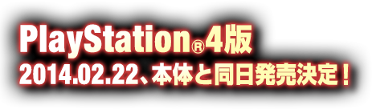

-
2013.09.19
-
2013.09.17
-
2013.09.12
-
2013.09.09『真·三國無双７ with 猛将伝』PlayStation®4版、本体と同日発売決定！
-
2013.09.05
-
2013.08.22『真·三國無双７ 猛将伝』公式サイトオープンキャラクター人気投票も実施中！


三国志時代に他を寄せ付けない強さを誇った猛将「呂布」を主人公にした新たな物語をストーリーモードでお楽しみいただけます。
名馬「赤兎馬」を駆り、鬼神の如き強さで「人中の呂布、馬中の赤兎」と称された猛将「呂布」。力に最大の価値を見出し、自らの力のみを信じて生きた呂布の生き様が本作でどう描かれるのかご期待ください。

呂布軍の軍師として、新ストーリー「呂布」に欠かせない人物「陳宮」が無双武将として登場します。また、孫権に取り立てられ、呉の未来を担う将として描かれる「朱然」をはじめ、シリーズファン待望の新キャラクターが続々と参戦します。
『真·三國無双７』に登場した77名に加えて、プレイアブルキャラクター数はシリーズ最多となり、『真·三國無双７』の世界をより華やかに彩ります。
『真·三國無双７』で描かれなかった三国志のIFエピソードが楽しめるシナリオを多数収録しています。
「もしも袁紹が官渡で曹操を破っていたら…」、「赤壁の戦いで火計が失敗していたら…」といった様々なIFをテーマにしたシナリオがプレイできます。
シナリオの中には、他のシナリオに影響を与えるものや、別のシナリオで条件を満たすと出現するものもあり、三国志の世界をより広く、より深く堪能できます。

連戦するほどに難易度があがる戦いに挑戦し、仲間や素材を集めて基地を発展させていく「将星モード」が、さらなる新要素とやりこみ要素を搭載して、大きく生まれ変わります。
地方を平定し戦乱を収めるという新たな目標が設定され、戦略、戦術共にパワーアップする｢将星モード｣にご期待ください。

兵法が記載された竹簡をモチーフにしたトリッキーな武器「兵法簡」をはじめ、華麗なアクションを繰り出せる武器系統が新たに加わります。また、得意な武器を使って派手な攻撃を繰り出す「EX攻撃」をすべての武将が2種類使えるようになります。
テイストの異なるもうひとつのEX攻撃や新アクションが武将の個性を一層際立たせ、一騎当千の爽快感をさらに高めます。

シリーズで人気の特定のルールで記録に挑戦する「チャレンジモード」を搭載します。敵を吹き飛ばして場外に落とした数を競う「彗星」や、いかに多数の敵を倒せるかを競う「暴風」などをはじめ、シリーズ最多の全5コースをご用意します。
ネットワークランキングにも対応し、全国のプレイヤーとしのぎを削りながら、ランキング上位を目指す醍醐味も味わえます。
『猛将伝』でおなじみの難易度「究極」はもちろん、フリーモードをさらに快適に、より深くプレイするための追加機能も導入します。
戦闘でプレイヤーをサポートしてくれる護衛武将システムの刷新、無双武将のパラメータの追加や上限の変更、より自由な武器作成が可能となる武器錬成システムの強化のほか、武器や支援獣、護衛武将など多彩な収集要素により『真·三國無双７』を遊びつくす『猛将伝』にふさわしい内容とボリュームを兼ね備えています。

PlayStation®3版『真・三國無双７』のセーブデータをお持ちの場合は、本作に引き継いでプレイすることができます。もちろん、PlayStation®Vita版にも引き継ぎ可能です。また、クロスプレイ、クロスセーブにも対応しており、PS3版とPS Vita版で協力プレイをしたり、同じセーブデータを共有してプレイすることができます。